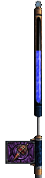
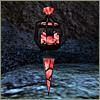

 P O W E R U P S
Powerups only work for a limited time. Fortunately, you’ll find them strategically placed throughout Wonderland.
Ragebox – Increases Alice’s strength and conserves her Will. The Ragebox rocks.